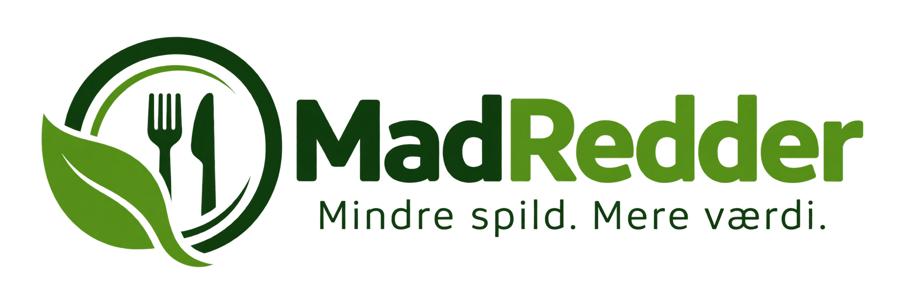
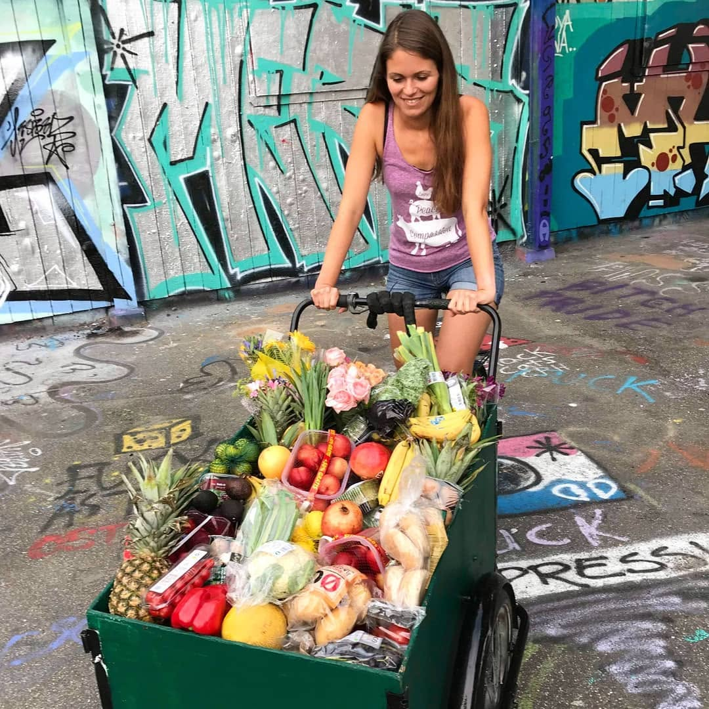

Danske husholdninger smider omkring 261.000 tons mad ud om året.
Madspild betyder, at mad, som stadig kunne være blevet spist, ender med at blive smidt ud. Det kan ske både i hjemmet, i supermarkeder, på restauranter og andre steder, hvor mad bliver solgt eller tilberedt. Ofte bliver mad smidt ud, fordi der bliver købt for meget, fordi rester ikke bliver brugt, eller fordi madvarer når deres udløbsdato. Ved at blive bedre til at planlægge vores indkøb og bruge den mad, vi allerede har, kan vi være med til at mindske madspild.
Madspild er et stort problem, hvor mad, som stadig kunne være blevet spist, ender med at blive smidt ud. Hver dag bliver der smidt næsten 2.000 tons fødevarer ud i Danmark. Madspild sker både i private hjem, butikker, restauranter og andre virksomheder. Formålet med denne hjemmeside er at skabe mere opmærksomhed omkring madspild og hjælpe dig med at træffe bedre valg i hverdagen. Her kan du lære mere om madspild, få gode råd til at mindske dit eget madspild og finde mad, som ellers risikerer at blive smidt ud.